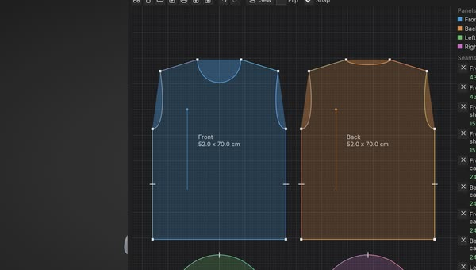

The monthly feature vote
Members choose what gets built next, every month.
The free, open-source sculpting app
We build the orchestration layer, and our agents build the software, openly, with the artists who use it. New versions every few days, bug fixes sooner.
We build the orchestration layer, and our agents build the software, openly, with the artists who use it. New versions every few days.
Sculpt it. Forge it. Ship it.
 Blender round-tripSend objects over and back in one click.
Blender round-tripSend objects over and back in one click. Gaussian splats, with Blender 5.3Sculpt over a splat, send it back.
Gaussian splats, with Blender 5.3Sculpt over a splat, send it back.Linux, macOS and Windows. No account, no subscription.
Orbiting 104 million micro triangles, drawn at the detail the view allows, runs at 208 frames a second on our simulated entry-level tier and 657 on an RTX 3060. The raw results are published. How we measure →
New to sculpting? Make your first sculpt in 10 minutes →

Built in
Each of these ships today and has a chapter in the guide.
Blender round-tripOne click sends objects to SculptForge and back. They update in place, with transform, materials and modifiers kept (Blender 4.2+).Gaussian splats, with Blender 5.3Send a splat from Blender 5.3, sculpt over it, and send the splats back to the same object. Capture to sculptable meshOne click turns a splat capture into clean quads with its colours.
Capture to sculptable meshOne click turns a splat capture into clean quads with its colours. Quad retopology and bakingQuad Remesh with your own guide curves, then bake normal, displacement and occlusion maps.
Quad retopology and bakingQuad Remesh with your own guide curves, then bake normal, displacement and occlusion maps.
Garments and clothReal-size sewing patterns from 8 templates, draped with a cloth brush. Optional AI brushesDescribe a brush in words and Brush Lab makes it. Your own provider, no account, and one switch turns AI off.
Optional AI brushesDescribe a brush in words and Brush Lab makes it. Your own provider, no account, and one switch turns AI off.Free and open source (GPL v3) on Linux, macOS and Windows. A new version every few days →
New in 0.12
Garments and cloth, sandboxed plugins, a Tool palette in the order you work, and cleaner cuts and creases.
From the community
I am an environment artist creating high and low poly assets for several projects including the game Wayward Realms. After fighting several other apps and spending too much money SculptForge fits like a hand-made glove. While there is much to love about this software I am glad I found something that actually makes sense.
You add it so quick !!? On Saturday !? Wow !
About the Tube drawing tool
After years of struggling with expensive software subscriptions, finding SculptForge felt like a breath of fresh air. It is evolving fast, with new improvements arriving regularly, and I genuinely believe it has a bright future. What excites me most is how it is made: artists steering and agents building is a monumental change in how software gets developed. My advice as a Senior Lead Character & Creature Artist and mentor: don't chase millions of polygons. Plan your models, build your forms intelligently, and add detail when needed. I strongly recommend every artist give it a try.
I'm primarily focused on digital sculpting and using SculptForge for my workflow as a multimedia freelancer. I was really happy to find software that lets me get into my creative flow. And boy does it handle the polygon counts.
Members and community
SculptForge is free for everyone, and what comes next is decided with its members and the community on Discord.
Members choose what gets built next, every month.
One guaranteed request a month, built first and credited to you. How requests work.
A new theme on Discord each month: submissions close on the 27th, vote until the end of the month, and the winner is featured on sculptforge.app. SculptForge can show the theme in your Discord status while you work on it.
Testers get each preview build with a checklist, and the people who report bugs are thanked by name in the release notes. Members are listed in Help > About.
Why we build this
No machine will ever replace your genius, your talent and your taste. So SculptForge is free, open source and on every platform, and it is built in the open with the people who use it.
What SculptForge does well, and the numbers behind it. Speed figures come from a benchmark you can run yourself. See the performance page →
Orbiting 104 million micro triangles, drawn at the detail the view allows, averages 208 frames a second on our simulated entry-level tier (a capped M1 Pro laptop) and 657 on an RTX 3060. A 33-million-triangle head's slowest frame in a full test is 103 ms on the entry-level tier and 132 ms on the 3060. Big brushes still trail the pen. Every number is the median of three runs, with the raw results published.
OpenUSD in and out (each Part its own Mesh prim, sculpt layers as blend shapes), glTF, FBX, OBJ and PLY, checked with the Khronos and OpenUSD validators.
GPL-3.0 and free, with every release free for everyone. No account, no licence server and no seats.
Windows 10 and 11, macOS 11+ on Apple Silicon and Intel, and Linux on x86_64 and ARM64, plus VFX Reference Platform CY2026 and CY2027 builds.
No telemetry, no analytics and no crash upload. Sculpting works fully offline, nothing listens on the network by default, and a studio policy can switch the network off. Security overview
Quad Remesh with detail projection, a UV editor with UDIM packing, layered PBR texture painting and baking, in the same app as the sculpt.
A focused sculpting app that starts instantly, works offline and fits straight into VFX, animation and game pipelines.
Twenty built-in brushes including Clay Block, Sharp Crease, Tendril, Trim and Move, plus seventy-one ready-tuned brushes in seven packs, with alphas, Lazy Stroke, symmetry, tablet pressure, classic, Blender and Maya-style navigation, subdivision and voxel remesh.
Hold Ctrl to paint a mask or drag a lasso or rectangle, mask by cavity, and grow, shrink or blur it. Auto-group by angle or by piece, then Ctrl+Shift+click to isolate a group and work on just that part.
Keep the body, eyes, teeth and armour as separate meshes. Append, split, merge and solo them, Alt+click to pick one, and export each as its own object to glTF, FBX, USD or through the Bridge.
Paint colour straight onto the sculpt in layers with blend modes, tint the cavities, and judge forms under the Sculpt, Red Wax, Clay, Skin, Bronze, Chrome or White materials, or load your own material capture (lit sphere) images and keep them in folders.
Keep Blender for the scene and sculpt here: the free add-on sends the selected objects to SculptForge in one click, and one click sends them back into the same objects, with transforms, materials and modifiers kept. Get the add-on · how it works
Exchange models with another sculpting app through the Bridge, with face groups, masks, UVs and vertex paint, on Windows and macOS. Project files keep everything, with autosave and crash recovery.
Quad Remesh rebuilds a dense sculpt or scan as clean quads whose edge loops follow the forms, and Project Detail brings the sculpted detail back onto the new topology. How it works
Unwrap and pack UVs over UDIM tiles, paint colour, roughness, metallic, normal and height in layers, and bake normal and other maps for game engines. Texture painting · baking
Sculpt layers become blend shapes and morph targets, and a whole LOD chain is one click. Export FBX, glTF, OpenUSD, OBJ and PLY, checked with the Khronos and OpenUSD validators.
One click imports or updates your asset in a running Unreal Editor, on this computer or another one on your network. Static meshes come with LODs, skeletal meshes with morph targets.
Load phone captures as a sculpting reference, turn them into watertight meshes, or turn your sculpt into splats. Supports PLY, .splat, glTF KHR_gaussian_splatting and OpenUSD.
sculptforge-cli runs any operation headless for build farms, and the Python module
(import sculptforge) gives you the same editor actions with NumPy mesh access.
VFX Reference Platform CY2026 · CY2027
SculptForge follows the VFX Reference Platform and is built and tested in its reference environments on every commit. There's no licence server, no seats and no accounts, and every editor action is scriptable from Python or the command line.
import sculptforge with NumPy mesh accessUSDA and USDZ, with each Part as its own Mesh prim and sculpt layers as UsdSkel blend shapes.
Exports are checked with OpenUSD's usdchecker.
rez-build --install puts the app and CLI on PATH and the Python module on
PYTHONPATH.
sculptforge-cli runs every operation without a display: remesh, decimate, LODs, USD, FBX
and glTF export. Turntables and review images render offscreen.
No Qt, Boost, TBB or OpenEXR to clash with the versions your other tools load. The few dependencies are linked statically.
No XWayland: a native Wayland window, sharp at any scale (fractional too), with pen pressure through the Wayland tablet protocol. X11 works just as well.
No licence server, telemetry or account. It runs on air-gapped workstations and farm nodes.
GPL-3.0: fork it and wire it into your asset system. In-house changes can stay in-house; you only share source if you distribute a modified version outside your organisation.
# Python 3.13, inside your pipeline
import sculptforge as sf
doc = sf.Document()
sf.run(doc, "open", path="/show/troll/troll_base.fbx")
sf.run(doc, "remesh", resolution=320)
sf.run(doc, "export_usd", path="/show/troll/troll_sculpt.usda")
verts = doc.vertices # NumPy (N, 3) float32# Deploy with Rez, run anywhere on the farm
rez-build --install
rez-env sculptforge -- sculptforge-cli -c \
'open path=troll.fbx; export_lods path=troll.glb levels=4'
rez-env sculptforge -- sculptforge troll.usda \
--render review.png --turntable 8Real recordings of the app at real speed, with nothing edited in.
UV Editor > Pack lays the islands over Columns x Rows tiles: four wide and three high, or ten by two for 1001 to 1020. Each pack is one click.
Mask the nose, pull it forward with the Transform gizmo, and the move goes into the active sculpt layer. The base mesh stays put, and the layer's weight dials the change out and back in.
Each vector displacement stamp follows the direction you drag it. Add Angle jitter, and every horn, rivet or fold comes out turned a little differently.
Pick the industry-standard input style: Alt+Ctrl and a drag rolls the view, Alt+H resets it, Alt+F frames the active Part, and the wheel zooms toward the pointer.
Sculpt a snarl on its own layer and play it back. Generate a LOD chain in one click: even the 5,000-triangle level keeps the expression. Then send a skeletal mesh with LODs and morph targets straight to Unreal Engine.
Turn a sculpt into Gaussian splats for web viewers and engines, and turn splat captures into watertight meshes in under a second.
New in 0.12.10: Mouse orbit speed: slow the mouse or trackpad turn; textured brushes mirror exactly; Crisp Flatten only cuts. Everything that changed · changelog
Mouse orbit speed: slow the mouse or trackpad turn; textured brushes mirror exactly; Crisp Flatten only cuts.
Brush Size and Intensity follow the mouse, and Undo is faster on dense models.
Reference images: your front and side drawings in the view while you sculpt; SculptForge should start again on Linux NVIDIA; two-key shortcuts.
Every AI feature is optional, runs only when you use it and can be turned off in Preferences > AI. SculptForge has no servers, no account and no telemetry.
Version 0.12.10. All builds come from the latest GitHub release, with SHA-256 checksums. Free forever; membership adds betas and early builds, Member Requests, a roadmap vote and credits.
makepkg -si
Android (early test build)Members today, free for everyone on 26 November · Android 9+ · tablets, phones & Chromebooks
VFX Reference PlatformCY2026 (Rocky 8) & CY2027 (Rocky 9) · .tar.gz with Python module
Rezpackaging/rez · build and install your own package
Each button downloads the newest version.
All downloads
(ARM64, portable .zip, one-command install) · on macOS also
brew install --cask islandmed/tap/sculptforge ·
older versions.
Android is an early test build. Members get the .apk today from the members' releases (the invitation to the member repository comes with membership); it is free for everyone on 26 November. Sideload it (allow installs from your browser or file manager) and uninstall any earlier test APK first, since it is signed with a different key. Test build: a later version will need one uninstall and reinstall. Found a bug? Tell us on GitHub or Discord.
Package managers: Homebrew is live; winget and Omarchy are in review; the AUR package is ready but not published yet; apt and dnf repositories are being built. Status: Install guide.
The builds aren't code-signed yet. Windows code signing via SignPath Foundation is being set up (code signing policy). On macOS, right-click the app and choose Open the first time. On Windows, if SmartScreen appears, choose More info → Run anyway. You can also build from source.
Yes. SculptForge is free under the GPL-3.0, and you own everything you sculpt with it. The GPL covers the program's source code, not your models. If you use an AI model to generate a starting point, that model's licence also applies (see the AI services guide).
No. Sculpting, layers, LODs, remeshing, file formats and Send to Unreal all work offline with no AI at all. The AI tools are extras you can switch to a local model or simply ignore.
It targets Unreal Engine 5. It uses Unreal's built-in Python remote execution, so you only enable the Python plugin and tick "Enable Remote Execution"; there's nothing to install in your project. You can always export an Unreal-ready FBX instead.
Mostly, yes. Blocking out, sculpting forms and detail, blend shapes, LODs and getting assets into Unreal, glTF or USD all work today, with familiar brushes and controls. Masking, face groups and hide/show, vertex paint, lit spheres, project files, subdivision levels, dynamic topology, Quad Remesh retopology with guides, UVs and vector displacement brushes are in too. Pick Classic sculpting keys at the first start, and bring models over as OBJ, FBX, glTF or USD, or through the Bridge.
Yes. Every release includes VFX Reference Platform CY2026 and CY2027 builds (Rocky Linux 8 and 9, GCC
14.2, Python 3.13), there's a Rez package, and everything the app does can be scripted from Python or the
headless CLI. It reads and writes OpenUSD (USDA/USDZ), FBX and glTF. Binary .usdc, USD
references and OpenColorIO aren't supported yet. See the
studio guide.
Try it, report bugs, share brushes, and send pull requests. See CONTRIBUTING.md.